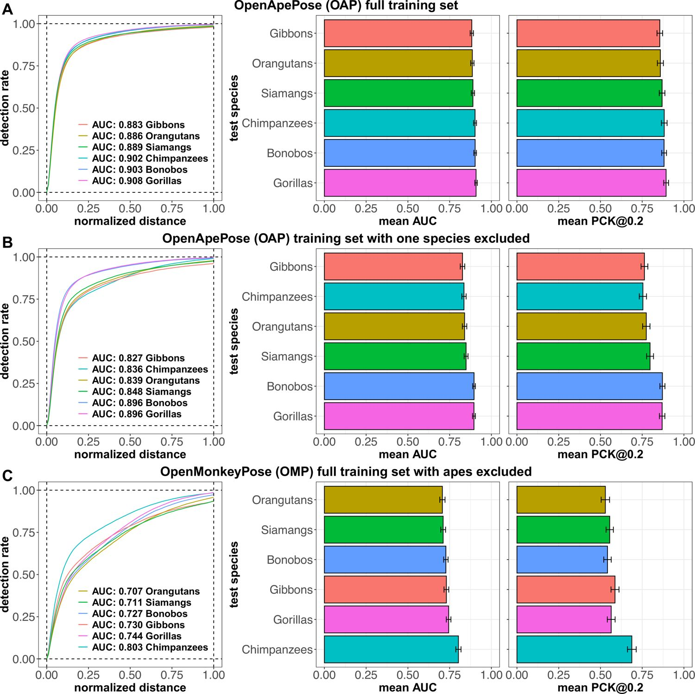

A borrowed skeleton
Markerless pose tracking reads an ordinary photograph or video and places coordinates on a body's joints—nose, elbows, wrists, knees—without attaching a single sensor to the subject. That capability has transformed behavioral research because any camera can now turn raw footage into frame-by-frame kinematics.
Those models depend entirely on labeled training examples. Pose trackers excel on people because hundreds of thousands of hand-labeled human photographs are freely available, and they work cleanly on laboratory mice and flies whose bodies and backgrounds stay simple. In 2022, however, no public pose dataset existed for nonhuman apes; anyone wanting to track a chimpanzee had nothing ready to download and run.
Apes pose a tougher computer-vision problem than lab animals. Dark fur offers few edges for a camera to lock onto, and ape bodies fold into far more configurations—sitting, knuckle-walking, hanging by one arm, or curling up asleep. Gathering large numbers of photographs is also difficult because relatively few apes live in zoos and sanctuaries, and wild field footage is rarely shared openly.
At the time, many researchers hoped we might skip building an ape dataset altogether. Humans are apes, and monkeys are close evolutionary relatives, so models already trained on people or monkeys might transfer straight onto gorillas and orangutans. Testing that assumption required a large benchmark of labeled ape photographs, so I led the effort to build OpenApePose and release every image, label, and model publicly.
Where 71,868 photographs come from
We gathered imagery spanning six ape species: chimpanzees, bonobos, gorillas, orangutans, gibbons, and siamangs. Most photographs came from zoos in 25 cities across the United States and Canada and from four sanctuaries. Our lab shot part of the collection ourselves, volunteers contributed additional sets, and I hired roughly ten local photographers on short contracts to cover zoos we could not visit in person.
Two additional sources filled out the collection. We drew a smaller set from public online videos and photographs—a workflow reviewed and approved by the university's legal office—and folded in roughly 17,000 ape photographs originally collected inside the lab's earlier monkey dataset, OpenMonkeyPose.

Curating for pose diversity mattered far more than keeping raw volume. We collected several hundred thousand images and discarded more than three quarters of them during screening. Blurry shots and distant or mostly occluded animals went out first, followed by near-duplicates—because a thousand frames of a gorilla sitting still teach a neural network one posture a thousand times. A trained technician screened every image, and I reviewed the selections myself, retaining only photographs that added a new pose, viewing angle, or background.
Once the final 71,868 images were selected, a commercial annotation team labeled 16 landmarks per animal—nose, eyes, head, neck, shoulders, elbows, wrists, hip, knees, and feet—following written guidelines published alongside the paper. To guard label quality, we audited every batch of 10,000 images by inspecting five random 100-image samples, checking every single joint across roughly 2,500 photographs in total. That audit caught systematic errors in one batch, which I sent back to be redone before training began.


To verify that our screening captured real behavioral variety, I projected all 71,868 labeled skeletons onto a two-dimensional map using UMAP, an algorithm that groups similar body geometries together. The map reflects ape biology cleanly: gibbons and siamangs, which swing beneath branches, form clusters distinct from the more ground-dwelling great apes, while tree-dwelling orangutans bridge both regions.
The test
A dataset proves its value only when models trained on it perform accurately on unseen images. I trained and compared six standard pose-estimation architectures in MMPose, training each on 60% of the photographs (43,120 images) and evaluating on a held-out 20% test set. HRNet-W48 achieved the highest accuracy—matching its top finish in our lab's earlier monkey benchmark—so I carried that single network into the paper's comparisons to evaluate the data cleanly without turning the study into an architecture leaderboard.
Pose accuracy depends on how close a predicted joint must land to a human label to count as correct. Because an animal's pixel size varies across photos, that tolerance radius is scaled as a fraction of the animal's body size. At a 20% tolerance, my OpenApePose model placed 88% of landmarks correctly; averaged across tolerances from strict to loose, it achieved an area-under-the-curve (AUC) score of 0.90 (0.897).
With that benchmark in hand, I ran the cross-species test the project was designed to answer. I took the exact same HRNet-W48 architecture trained on monkeys or on people and scored each model on the same held-out ape photographs.
Neither relative came close to the ape-trained model: OpenApePose reached 0.897 AUC, compared with 0.743 for the monkey-trained model and 0.710 for the human-trained model. The ordering between the two baselines surprised me most. Although humans are biologically apes and the human dataset contained nearly five times as many training images as the monkey dataset, the human-trained model still scored slightly worse on ape photographs than the monkey-trained model.
Evolutionary closeness did provide a modest boost: the human-trained model scored higher on apes (0.71) than on monkeys (0.58). Even so, upright human posture, clothing, and exposed skin left that model poorly equipped for hairy, climbing apes.
Humans are apes. The model trained on humans did not seem to know it.
Placed alongside within-species benchmarks, 0.90 sits near the practical ceiling for this architecture. Tested on their own matching species, the monkey-trained model scores 0.93 on monkeys and the human-trained model scores 0.96 on people, leaving the ape-trained model close behind both.

How much data is enough?
Building a 71,868-image dataset takes months of collection and labeling, so I wanted to know whether even more zoo photographs would keep improving accuracy. I retrained HRNet-W48 on species-balanced random subsets ranging from 10% (4,312 photos) up to 100% (43,120 photos) of the training set and measured test accuracy at each step.
Accuracy climbed steeply up to roughly 30,000 training photographs (70% of the set, 0.899 AUC) and flattened completely from there. Training on 90% (0.903) or 100% (0.897) offered no additional gain over 70%. For HRNet-W48, adding more zoo photographs of the same style hits diminishing returns; further gains will come from stronger architectures or imagery from genuinely new environments.
A species it never saw
Standard random train-test splits hide a subtle form of data leakage. When photographs are split randomly, two shots of the same chimpanzee in the same enclosure taken minutes apart can land on opposite sides of the split, letting a network score well partly by memorizing familiar backgrounds or individuals.
To measure true out-of-distribution generalization, I designed a stricter leave-one-species-out test. I trained six separate HRNet-W48 models, holding one entire ape species out of training each time and scoring each model on the species it had never seen. Under that split, training and test sets shared zero animals and zero enclosures.
Accuracy (AUC) on a species held out of training
- Gibbon 0.827
- Chimpanzee 0.836
- Orangutan 0.839
- Siamang 0.848
- Bonobo 0.896
- Gorilla 0.896
Every model lost some accuracy on its unseen species, yet every single one still outperformed the monkey-trained baseline (0.827–0.896 vs. 0.71–0.80). Chimpanzees showed the sharpest drop relative to full-dataset performance, and gibbons remained the hardest species overall—echoing what our annotators experienced when labeling an animal hanging by one arm with its legs tucked tightly underneath. Training on close ape relatives transfers meaningfully to an unseen ape, though it still cannot fully replace examples of the target species itself.

What it cannot do
Releasing an open benchmark means stating clearly where its boundaries lie. Five practical limits apply to OpenApePose:
- Zoo and sanctuary bias: Most images come from captive enclosures. Wild forests introduce deep shade, dense foliage, and long camera distances—conditions we have not yet benchmarked.
- 2D skeletons only: Because the dataset contains single-camera photographs without synchronized viewpoints, models trained on it track flat 2D coordinates.
- One labeled animal per image: Many frames contain multiple apes, yet only one focal animal is annotated in each photograph.
- No hands or facial expressions: Sixteen landmarks capture trunk and limb geometry, leaving out fine finger gestures and facial cues central to primate communication.
- Single benchmark architecture: Every scaling curve and cross-species test in the paper uses HRNet-W48; larger or newer architectures might keep improving beyond 30,000 images.
Because the photographs and annotations are in the public domain, other researchers can extend the labels or add forest footage without rebuilding the foundation from scratch.
Building with OpenApePose
Making the dataset, labels, and trained weights public has already let researchers outside our lab build new tools on top of it.
Wim Pouw at Tilburg University paired the OpenApePose pose model with an open-vocabulary object detector (OWLv2) and a multi-object tracker (ByteTrack) to create a lightweight Python package called envisionboxbio-apetrack. Point the package at a video and it outputs bounding boxes, animal identities, and 16 tracked landmarks per ape with no custom labeling or model training required.
The software engineering behind that package is his; my contribution was the open pose model he built upon, for which he kindly credited me as a co-author. He also reposted the converted model weights on Zenodo in a newer format without retraining. The combined pipeline has not yet undergone formal benchmarking and still struggles with distant or overlapping apes, though its demo shows promising tracking on zoo gibbons and even wild chimpanzee field video—a setting barely represented in our training set.
For my own work, OpenApePose's limits directly shaped what I built next. Flat, single-view photographs could not capture how a young primate moves through three-dimensional space, so at Emory I designed a multi-view system that could: twelve synchronized cameras and a 3D pose network.
Get it. Paper: eLife 12:RP86873 (2023). Full dataset and trained models: Dryad, in the public domain. Code: github.com/desai-nisarg/OpenApePose. Converted weights for envisionboxbio-apetrack, posted by Wim Pouw: Zenodo.
With Praneet Bala, Rebecca Richardson, Jessica Raper, Jan Zimmermann, and Benjamin Hayden (principal investigator), at the University of Minnesota and Emory University. Thanks to the zoos and sanctuaries that welcomed our photographers—including the Chimpanzee Conservation Center, Project Chimps, Chimp Haven, and the Ape Initiative—and to everyone who contributed photographs.
Figures and numbers come from Desai et al. (2023), eLife 12:RP86873, used under CC BY 4.0. The landmark diagram is cropped from Figure 2, and the bar charts are redrawn from the paper's numbers.